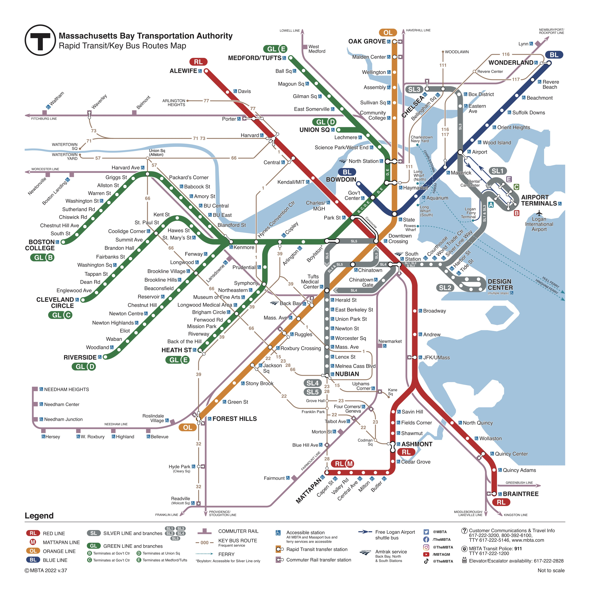
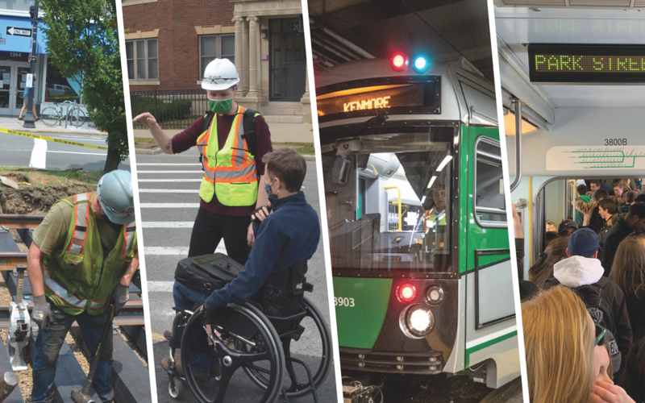
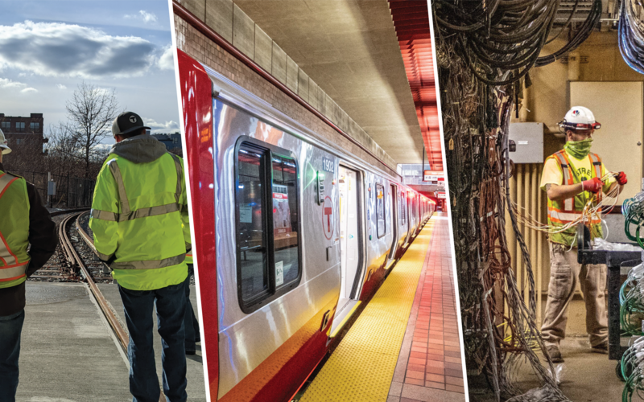

Schedules
Maps


Green Line Program
We're improving reliability and quality of service for riders and communities served by the
Green Line.

Red Line Program
We're improving reliability and quality of service on the T’s most popular line.
News
APRIL 25, 2024
MBTA Extends Blue Line Track Work Through April 30